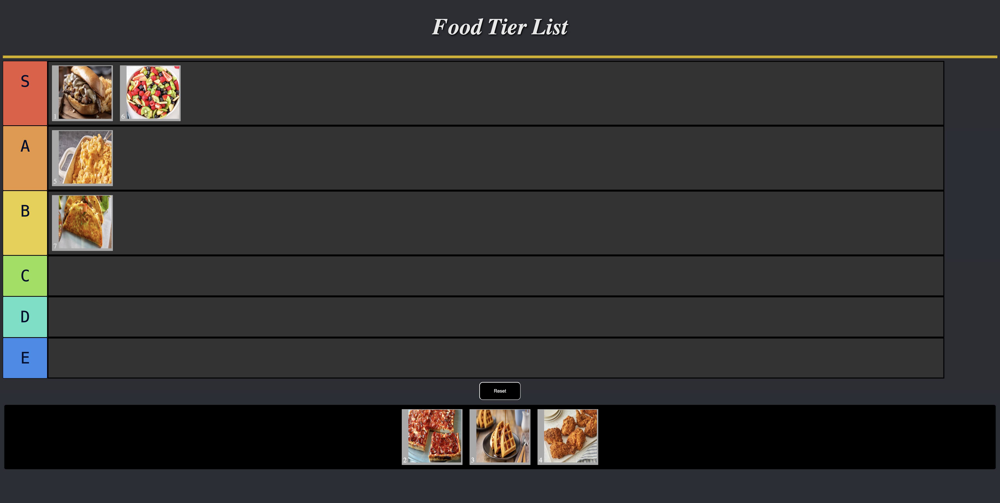

These are a few of my projects from both school, and my personal work.
About
This is my tier list project that I made in my 11th grade year, 2025! Here the class was tasked with making a tier list of anything they wanted, and I chose food. This activity was my first time using and learning about how to make draggable items using JavaScript.
I would learn a new skill from this experience. First was how to use drag and drop elements in a website, as well as developing a better understanding of using flex elements to make websites more flexable for different devices.
You can check out this project here.

About
Here is my To do list project I made in 11th grade during 2025! Here I was tasked with making a list that the client can add, remove, and check off items from. While it is simple, at the time this was a more advance kind of list I had created, and certainly the most interactive list i ever made at the time.
Here I would learn how to make an list completly controlled by user inputs.
You can check out this project here.

About
Here is my first game Dead Eye! I made this in a program named Urban Arts Game Academy through their summer intensive in 2025, a 6 week program where me and many others learnt the basics of making 2D video games using Unity. This was my first attempt of making a actual game, and I had to create it in 1 week using the skills I learnt the 4 weeks before it. While it sadly got bugged and I could get my unity file back, this was a good first experience in building a game solo and i'm proud I was even able to make a game.
During the 6 weeks I was there, I learnt many skills that I still use today. I learnt how to use Unity to build a game, C#, make pixel art, make sound effects, and write my own narrative for a game. I was able to go though the whole proccess of learning these skills for 4 weeks, and put those skills to use in the last 2 weeks to make my own gamne, and a game with a team while helped me to better understand how to work in a team on others and manage task efficently in a short span of time, both the solo and team project being one week each.
You can check out this project here.